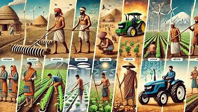
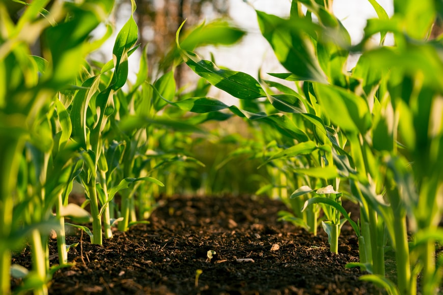
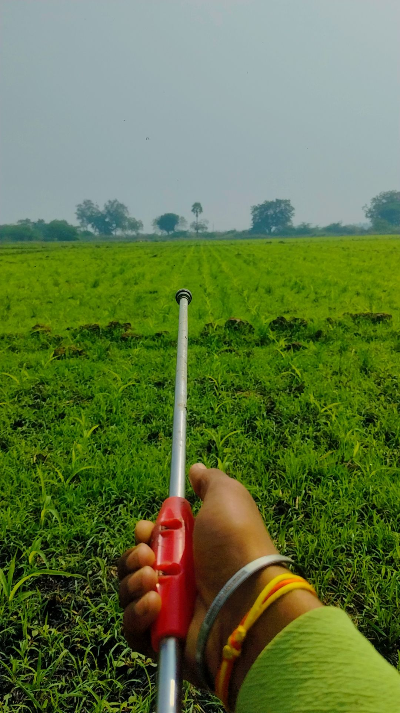
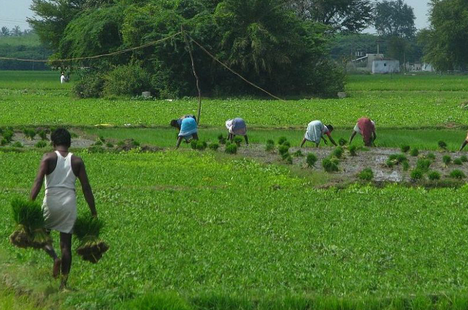
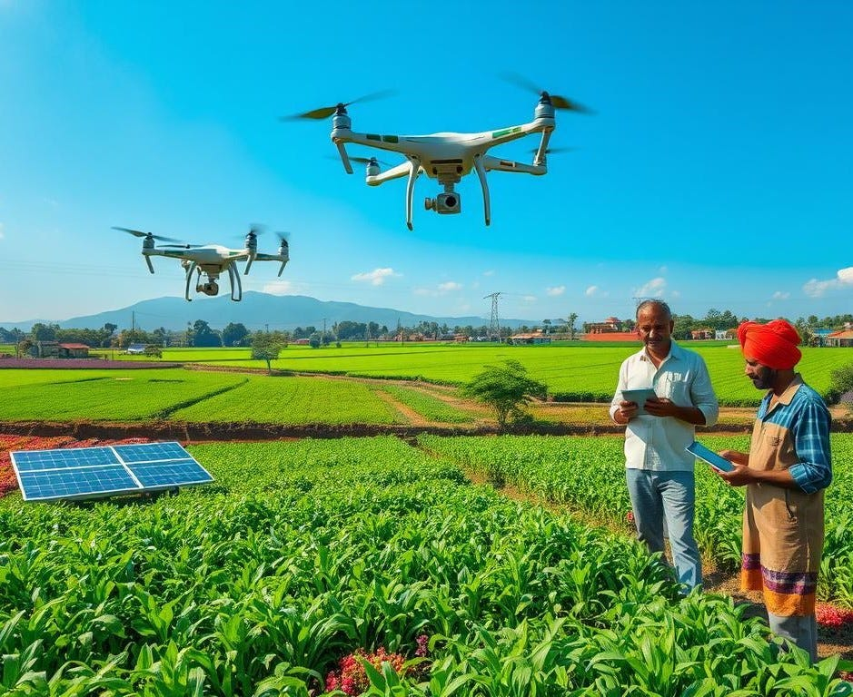
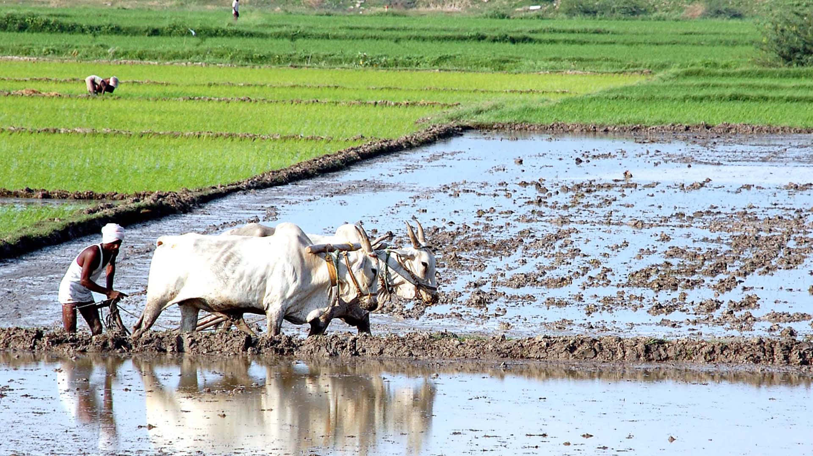
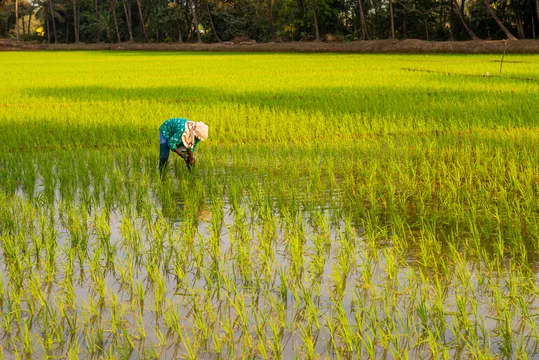

Before the harvest… there were roots.
Not just in the soil, but in people and traditions.
What we see today… began long ago.
Everything we depend on today started with something simple.
Farming is not just growing crops.
It is how life begins.
Every grain starts with care, patience, and nature.

1. The Beginning
Farming did not start with machines.
It started with people who learned from nature.
They observed the seasons, understood the soil, and grew food with care.

2. The Generations


Farming was never just work.
It was a way of living.
Knowledge was not written. It was passed from one generation to another.
3. Change Over Time
Things have changed.
Tools became machines. Work became faster.
But the roots remain the same.
Growth Begins from Soil


4. The Connection
Human Effort Behind Every Harvest
The land is not just soil.
It is life.
Farmers don’t control it. They work with it.

The soil connects everything — life, people, and time.
Connection Between Humans and Soil

Farming as a Way of Life

5. The Roots Define the Future
We cannot move forward without understanding where we began.
Roots may not be visible… but they hold everything together.
Learn More About Farming
Explore trusted resources to understand agriculture and its importance.